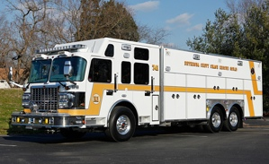

Bethesda-Chevy Chase Rescue Squad
Thank you Runners and Sponsors. Results are posted!
Please take a moment to file out a survery so we can improve your experience next year.
8K Runners Survery: https://www.surveymonkey.com/s/R1Run
Volunteer Survery: https://www.surveymonkey.com/s/R1RunVolunteers
Join us for the inaugural Res1cue Run 8K!! The race starts Old Georgetown Road next to the BCCRS station and finishes near the station on Battery Lane. The course is through the heart of Bethesda and features fast running on Old Georgetown, Beech, Linden, Pooks Hill, Fairmont, and Woodmont, with a couple of good hills on 355 to keep you on your forefeet. For the kids, there is a .3 miler and a .1 miler.
WHEN: May 4, 2014 at 8:00AM. Kids Fun runs will begin shortly after.
WHERE: The race starts and finishes at 5020 Battery Lane Bethesda, MD 20814.
SWAG: Registered participants will receive an exclusive Res1cue Run T-shirt and finisher's premium.

CUT ABOVE CHALLENGE: We are thrilled to announce the "CUT ABOVE" fire/rescue competition -- a race within the Res1cue Run 8K! Contest rules: Each station, department, shift, or recruit class team may have as many runners as desired. The top three finish times for each team will be totaled, for your team finish time. The team with the fastest team finish will be engraved on our "Cut Above Res1cue Run" trophy (featuring Hurst cutter blades) …and the winning team takes it home to their station until next year's event.
All fire/rescue/public safety personnel receive a 25% discount on registration

TIMING: Montgomery County Road Runners Club will be handling the Res1cue Run timing and scoring. Please remember to remove your timing chip after finishing the race, and place it in the collection bins.
POST RACE : Medals will be awarded once runners cross the finish line and return their timing chips. Drinks and refreshments will be available, along with advanced medical teams.
RACE BENEFACTOR: All proceeds from the event go to benefit the Bethesda Chevy Chase Rescue Squad. This money stays in your community to serve you and your neighbors with state of the art emergency medical, fire,
and rescue services. The Rescue Squad does not receive regular appropriated funds from any government. Instead, we raise almost all of our $2 million operating budget from individual donors, foundations, businesses, and occasional state and federal grants. The Rescue Squad is registered under Section 501(c)(3). When you choose to run with us, you're choosing to support your local community.
PARKING: Parking will be available off-site. Garages are located within easy walking distance on Del Ray, St. Elmo, and Woodmont. All Bethesda garage locations can be found at montgomerycountymd.gov under parking.


 Rescue Squad. All Rights Reserved.
Rescue Squad. All Rights Reserved. {kind=link}
Connect With Us
Contact Us Today For More Info - 301-652-0077